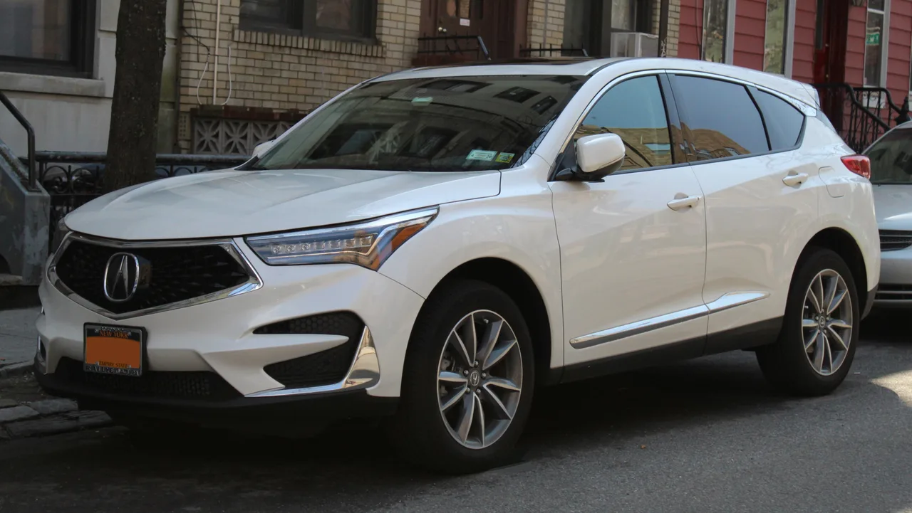
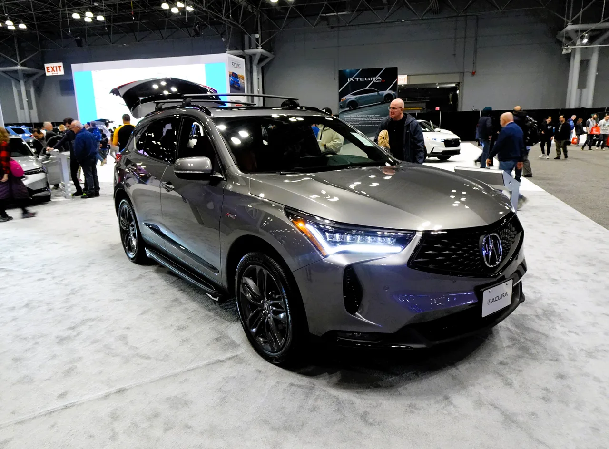

▲ 현행 어큐라 RDX — 2018년 데뷔 이후 줄곧 2.0L 터보 단일 파워트레인을 유지해 왔지만, 차기 4세대(MY28)부터는 하이브리드가 추가된다
어큐라가 몬터레이 카 위크 기간 중 열리는 더 퀘일(The Quail) 행사에서 '몬터레이 콘셉트'를 공개했습니다. 8월 14일 공개 예정인 이 콘셉트카의 핵심은 지금까지 어큐라 어떤 모델에도 없던 새로운 테일램프 디자인입니다. 그리고 이 디자인 언어는 콘셉트로만 끝나지 않습니다. 어큐라는 이 언어가 2028년형(MY28)으로 나올 4세대 RDX 하이브리드에 양산차 최초로 적용될 것이라고 밝혔습니다.
1. X자를 반으로 가른, 처음 보는 시그니처
몬터레이 콘셉트의 조명 디자인은 X자 형태를 세로로 정확히 반씩 나눠, 차체 좌우에 각각 한쪽씩 배치하는 방식입니다. 하나로 완결된 모티프를 시각적으로 쪼개 배치함으로써, 차량 전체를 봤을 때는 공격적이고 날카로운 인상을 만들어냅니다. 여기에 테일패널을 가로지르는 형태로 어큐라 브랜드 레터링을 조명으로 새겨넣었고, 레터링 위아래로 수직 방향의 조명 요소 두 개를 추가로 배치했습니다. 하이마운트 브레이크등과 보조 테일램프로 추정되는 이 구성은, 후면부 전체를 하나의 통합된 조명 그래픽으로 디자인하겠다는 의도로 읽힙니다.

▲ 현행 RDX 실내 — 차기 4세대는 새 디자인 언어와 함께 파워트레인 구성도 대대적으로 바뀔 예정이다
2. 콘셉트가 아니라 '예고편'인 이유
자동차 브랜드들이 공개하는 콘셉트카는 대개 양산과 무관한 먼 미래의 비전을 보여주는 데 그치는 경우가 많습니다. 하지만 어큐라는 이번 몬터레이 콘셉트를 두고 "차기 4세대 RDX 하이브리드가 2028년형으로 데뷔할 때 처음 선보일 어큐라의 새로운 디자인 언어를 미리 보여준다"고 명확히 밝혔습니다. 즉 이번 콘셉트는 막연한 상상도가 아니라, 이미 확정된 양산 계획의 예고편인 셈입니다. 콘셉트 공개 시점과 양산 적용 시점 사이의 간격이 명시됐다는 점에서, 어큐라의 디자인 전환이 상당히 구체적인 단계에 와 있다는 것을 짐작할 수 있습니다.

▲ 어큐라 RDX SH-AWD — 2018년 데뷔 이후 큰 변화 없이 이어져 온 디자인이, 2028년형부터는 몬터레이 콘셉트의 언어로 전면 교체된다
3. 데뷔 10년 만에 처음 얹는 하이브리드
현행 RDX는 2018년 데뷔한 이후, 지금까지 2.0L 터보 가솔린 단일 파워트레인만을 고수해 왔습니다. 전륜구동 또는 사륜구동을 선택할 수 있는 컴팩트 럭셔리 SUV로 BMW X3와 정면 경쟁하는 모델이지만, 경쟁 브랜드들이 하이브리드·플러그인하이브리드 옵션을 속속 추가하는 동안 RDX는 순수 가솔린 엔진에만 머물러 왔습니다. 차기 4세대에서 처음으로 하이브리드 파워트레인이 도입된다는 것은, 어큐라 라인업 안에서 RDX가 갖고 있던 '전동화 공백'을 메우는 작업이라는 의미가 있습니다.
| 구분 | 현행 RDX | 차기 RDX(MY28) |
|---|---|---|
| 데뷔 시점 | 2018년 | 2028년형 |
| 파워트레인 | 2.0L 터보 가솔린 단일 | 하이브리드 추가 |
| 구동방식 | 전륜·SH-AWD 사륜 | 미정 |
| 디자인 언어 | 기존 어큐라 패밀리룩 | 몬터레이 콘셉트 계승 |
| 주요 경쟁 모델 | BMW X3 | BMW X3, 하이브리드 경쟁 모델 확대 |

▲ 어큐라 RDX A-Spec SH-AWD(2024) — RDX는 어큐라 라인업에서 가장 많이 팔리는 볼륨 모델로, 새 디자인 언어의 첫 시험대가 된다
4. 왜 지금 디자인부터 바꾸나
파워트레인 변화보다 디자인 언어 교체를 먼저 공개한 점도 눈여겨볼 대목입니다. 하이브리드 도입이라는 기술적 변화는 소비자에게 곧바로 와닿기 어렵지만, 파격적인 조명 디자인은 브랜드 이미지 전환을 시각적으로 각인시키는 데 효과적입니다. 특히 RDX는 어큐라 라인업에서 가장 많이 팔리는 볼륨 모델인 만큼, 이 차에 처음 적용되는 새 디자인 언어는 사실상 브랜드 전체의 얼굴을 재정의하는 신호탄이 될 가능성이 높습니다. 콘셉트카 단계에서부터 화제성을 확보해 두려는 마케팅 전략으로도 해석할 수 있습니다.
5. 2028년까지, 남은 관전 포인트
몬터레이 콘셉트가 공개되는 8월 14일 이후에도, RDX의 실제 양산형이 나오기까지는 아직 2년 넘게 남았습니다. 하이브리드 시스템의 구체적인 출력·연비 수치, 사륜구동 옵션 유지 여부, 그리고 콘셉트카의 파격적인 테일램프 디자인이 양산 단계에서 얼마나 원형을 유지할지가 앞으로의 관전 포인트입니다. 콘셉트카 특유의 과감한 디자인이 양산 과정에서 다소 무뎌지는 경우가 많다는 점을 감안하면, 실제 2028년형 RDX가 이 정도의 파격을 그대로 담아낼 수 있을지도 지켜볼 대목입니다.